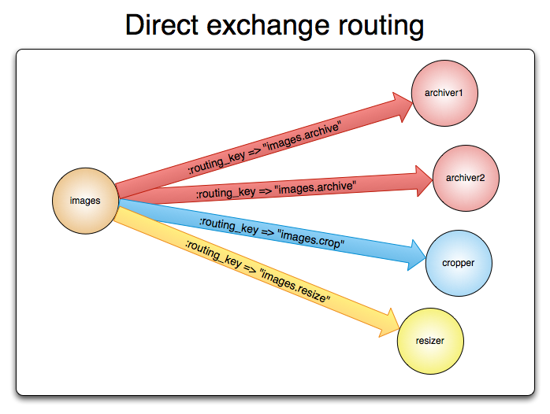

AMQP 0-9-1 Model Explained
Overview
This guide provides an overview of the AMQP 0-9-1 protocol, one of the protocols supported by RabbitMQ.
High-level Overview of AMQP 0-9-1 and the AMQP Model
What is AMQP 0-9-1?
AMQP 0-9-1 (Advanced Message Queuing Protocol) is a messaging protocol that enables conforming client applications to communicate with conforming messaging middleware brokers.
Brokers and Their Role
Messaging brokers receive messages from publishers (applications that publish them, also known as producers) and route them to consumers (applications that process them).
Since it is a network protocol, the publishers, consumers and the broker can all reside on different machines.
AMQP 0-9-1 Model in Brief
The AMQP 0-9-1 Model has the following view of the world: messages are published to exchanges, which are often compared to post offices or mailboxes. Exchanges then distribute message copies to queues using rules called bindings. Then the broker either deliver messages to consumers subscribed to queues, or consumers fetch/pull messages from queues on demand.

When publishing a message, publishers may specify various message attributes (message meta-data). Some of this meta-data may be used by the broker, however, the rest of it is completely opaque to the broker and is only used by applications that receive the message.
Networks are unreliable and applications may fail to process messages therefore the AMQP 0-9-1 model has a notion of message acknowledgements: when a message is delivered to a consumer the consumer notifies the broker, either automatically or as soon as the application developer chooses to do so. When message acknowledgements are in use, a broker will only completely remove a message from a queue when it receives a notification for that message (or group of messages).
In certain situations, for example, when a message cannot be routed, messages may be returned to publishers, dropped, or, if the broker implements an extension, placed into a so-called "dead letter queue". Publishers choose how to handle situations like this by publishing messages using certain parameters.
Queues, exchanges and bindings are collectively referred to as AMQP entities.
AMQP 0-9-1 is a Programmable Protocol
AMQP 0-9-1 is a programmable protocol in the sense that AMQP 0-9-1 entities and routing schemes are primarily defined by applications themselves, not a broker administrator. Accordingly, provision is made for protocol operations that declare queues and exchanges, define bindings between them, subscribe to queues and so on.
This gives application developers a lot of freedom but also requires them to be aware of potential definition conflicts. In practice, definition conflicts are rare and often indicate a misconfiguration.
Applications declare the AMQP 0-9-1 entities that they need, define necessary routing schemes and may choose to delete AMQP 0-9-1 entities when they are no longer used.
Exchanges and Exchange Types
Exchanges are AMQP 0-9-1 entities where messages are sent to. Exchanges take a message and route it into zero or more queues. The routing algorithm used depends on the exchange type and rules called bindings. AMQP 0-9-1 brokers provide four exchange types:
| Exchange type | Default pre-declared names |
|---|---|
| Direct exchange | (Empty string) and amq.direct |
| Fanout exchange | amq.fanout |
| Topic exchange | amq.topic |
| Headers exchange | amq.match (and amq.headers in RabbitMQ) |
Besides the exchange type, exchanges are declared with a number of attributes, the most important of which are:
- Name
- Durability (exchanges survive broker restart)
- Auto-delete (exchange is deleted when last queue is unbound from it)
- Arguments (optional, used by plugins and broker-specific features)
Exchanges can be durable or transient. Durable exchanges survive broker restart whereas transient exchanges do not (they have to be redeclared when broker comes back online). Not all scenarios and use cases require exchanges to be durable.
Default Exchange
The default exchange is a direct exchange with no name (empty string) pre-declared by the broker. It has one special property that makes it very useful for simple applications: every queue that is created is automatically bound to it with a routing key which is the same as the queue name.
For example, when you declare a queue with the name of "search-indexing-online", the AMQP 0-9-1 broker will bind it to the default exchange using "search-indexing-online" as the routing key (in this context sometimes referred to as the binding key). Therefore, a message published to the default exchange with the routing key "search-indexing-online" will be routed to the queue "search-indexing-online". In other words, the default exchange makes it seem like it is possible to deliver messages directly to queues, even though that is not technically what is happening.
Direct Exchange
A direct exchange delivers messages to queues based on the message routing key. A direct exchange is ideal for the unicast routing of messages. They can be used for multicast routing as well.
Here is how it works:
- A queue binds to the exchange with a routing key K
- When a new message with routing key R arrives at the direct exchange, the exchange routes it to the queue if K = R
- If multiple queues are bound to a direct exchange with the same routing key K, the exchange will route the message to all queues for which K = R
A direct exchange can be represented graphically as follows:

Fanout Exchange
A fanout exchange routes messages to all of the queues that are bound to it and the routing key is ignored. If N queues are bound to a fanout exchange, when a new message is published to that exchange a copy of the message is delivered to all N queues. Fanout exchanges are ideal for the broadcast routing of messages.
Because a fanout exchange delivers a copy of a message to every queue bound to it, its use cases are quite similar:
- Massively multi-player online (MMO) games can use it for leaderboard updates or other global events
- Sport news sites can use fanout exchanges for distributing score updates to mobile clients in near real-time
- Distributed systems can broadcast various state and configuration updates
- Group chats can distribute messages between participants using a fanout exchange (although AMQP does not have a built-in concept of presence, so XMPP may be a better choice)
A fanout exchange can be represented graphically as follows:

Topic Exchange
Topic exchanges route messages to one or many queues based on matching between a message routing key and the pattern that was used to bind a queue to an exchange. The topic exchange type is often used to implement various publish/subscribe pattern variations. Topic exchanges are commonly used for the multicast routing of messages.
Topic exchanges have a very broad set of use cases. Whenever a problem involves multiple consumers/applications that selectively choose which type of messages they want to receive, the use of topic exchanges should be considered.
Example uses:
- Distributing data relevant to specific geographic location, for example, points of sale
- Background task processing done by multiple workers, each capable of handling specific set of tasks
- Stocks price updates (and updates on other kinds of financial data)
- News updates that involve categorization or tagging (for example, only for a particular sport or team)
- Orchestration of services of different kinds in the cloud
- Distributed architecture/OS-specific software builds or packaging where each builder can handle only one architecture or OS
Headers Exchange
A headers exchange is designed for routing on multiple attributes that are more easily expressed as message headers than a routing key. Headers exchanges ignore the routing key attribute. Instead, the attributes used for routing are taken from the headers attribute. A message is considered matching if the value of the header equals the value specified upon binding.
It is possible to bind a queue to a headers exchange using more than one header for matching. In this case, the broker needs one more piece of information from the application developer, namely, should it consider messages with any of the headers matching, or all of them? This is what the "x-match" binding argument is for. When the "x-match" argument is set to "any", just one matching header value is sufficient. Alternatively, setting "x-match" to "all" mandates that all the values must match.
For "any" and "all", headers beginning with the string x- will not be used to evaluate matches. Setting "x-match" to "any-with-x" or "all-with-x" will also use headers beginning with the string x- to evaluate matches.
Headers exchanges can be looked upon as "direct exchanges on steroids". Because they route based on header values, they can be used as direct exchanges where the routing key does not have to be a string; it could be an integer or a hash (dictionary) for example.
Queues
Queues in the AMQP 0-9-1 model are very similar to queues in other message- and task-queueing systems: they store messages that are consumed by applications. Queues share some properties with exchanges, but also have some additional properties:
- Name
- Durable (the queue will survive a broker restart)
- Exclusive (used by only one connection and the queue will be deleted when that connection closes)
- Auto-delete (queue that has had at least one consumer is deleted when last consumer unsubscribes)
- Arguments (optional; used by plugins and broker-specific features such as message TTL, queue length limit, etc)
Before a queue can be used it has to be declared. Declaring a queue will cause it to be created if it does not already exist. The declaration will have no effect if the queue does already exist and its attributes are the same as those in the declaration. When the existing queue attributes are not the same as those in the declaration a channel-level exception with code 406 (PRECONDITION_FAILED) will be raised.
Queue Names
Applications may pick queue names or ask the broker to generate a name for them. Queue names may be up to 255 bytes of UTF-8 characters. An AMQP 0-9-1 broker can generate a unique queue name on behalf of an app. To use this feature, pass an empty string as the queue name argument. The generated name will be returned to the client with queue declaration response.
Queue names starting with "amq." are reserved for internal use by the broker. Attempts to declare a queue with a name that violates this rule will result in a channel-level exception with reply code 403 (ACCESS_REFUSED).
Queue Durability
In AMQP 0-9-1, queues can be declared as durable or transient. Metadata of a durable queue is stored on disk, while metadata of a transient queue is stored in memory when possible.
The same distinction is made for messages at publishing time.
In environments and use cases where durability is important, applications must use durable queues and make sure that publish mark published messages as persisted.
This topic is covered in more detailed in the Queues guide.
Bindings
Bindings are rules that exchanges use (among other things) to route messages to queues. To instruct an exchange E to route messages to a queue Q, Q has to be bound to E. Bindings may have an optional routing key attribute used by some exchange types. The purpose of the routing key is to select certain messages published to an exchange to be routed to the bound queue. In other words, the routing key acts like a filter.
To draw an analogy:
- Queue is like your destination in New York city
- Exchange is like JFK airport
- Bindings are routes from JFK to your destination. There can be zero or many ways to reach it
Having this layer of indirection enables routing scenarios that are impossible or very hard to implement using publishing directly to queues and also eliminates certain amount of duplicated work application developers have to do.
If a message cannot be routed to any queue (for example, because there are no bindings for the exchange it was published to) it is either dropped or returned to the publisher, depending on message attributes the publisher has set.
Consumers
Storing messages in queues is useless unless applications can consume them. In the AMQP 0-9-1 Model, there are two ways for applications to do this:
- Subscribe to have messages delivered to them ("push API"): this is the recommended option
- Polling ("pull API"): this way is highly inefficient and should be avoided in most cases
With the "push API", applications have to indicate interest in consuming messages from a particular queue. When they do so, we say that they register a consumer or, simply put, subscribe to a queue. It is possible to have more than one consumer per queue or to register an exclusive consumer (excludes all other consumers from the queue while it is consuming).
Each consumer (subscription) has an identifier called a consumer tag. It can be used to unsubscribe from messages. Consumer tags are just strings.
Message Acknowledgements
Consumer applications – that is, applications that receive and process messages – may occasionally fail to process individual messages, lose connection to the server or fail in many other ways.
There is also the possibility of network issues causing problems. This raises a question: when should the broker remove messages from queues? The AMQP 0-9-1 specification gives consumers control over this. There are two acknowledgement modes:
- After broker sends a message to an application (using either basic.deliver or basic.get-ok method).
- After the application sends back an acknowledgement (using the basic.ack method).
The former choice is called the automatic acknowledgement model, while the latter is called the explicit acknowledgement model. With the explicit model the application chooses when it is time to send an acknowledgement. It can be right after receiving a message, or after persisting it to a data store before processing, or after fully processing the message (for example, successfully fetching a Web page, processing and storing it into some persistent data store).
If a consumer dies without sending an acknowledgement, the broker will redeliver it to another consumer or, if none are available at the time, the broker will wait until at least one consumer is registered for the same queue before attempting redelivery.
Rejecting Messages
When a consumer application receives a message, processing of that message may or may not succeed. An application can indicate to the broker that message processing has failed (or cannot be accomplished at the time) by rejecting a message. When rejecting a message, an application can ask the broker to discard or requeue it. When there is only one consumer on a queue, make sure you do not create infinite message delivery loops by rejecting and requeueing a message from the same consumer over and over again.
Negative Acknowledgements
Messages are rejected with the basic.reject method. There is one limitation that basic.reject has: there is no way to reject multiple messages as you can do with acknowledgements. However, if you are using RabbitMQ, then there is a solution. RabbitMQ provides an AMQP 0-9-1 extension known as negative acknowledgements or nacks. For more information, please refer to the Confirmations and basic.nack extension guides.
Prefetching Messages
For cases when multiple consumers share a queue, it is useful to be able to specify how many messages each consumer can be sent at once before sending the next acknowledgement. This can be used as a simple load balancing technique or to improve throughput if messages tend to be published in batches. For example, if a producing application sends messages every minute because of the nature of the work it is doing.
Note that RabbitMQ only supports channel-level prefetch-count, not connection or size based prefetching.
Message Attributes and Payload
Messages in the AMQP 0-9-1 model have attributes. Some attributes are so common that the AMQP 0-9-1 specification defines them and application developers do not have to think about the exact attribute name. Some examples are
- Content type
- Content encoding
- Routing key
- Delivery mode (persistent or not)
- Message priority
- Message publishing timestamp
- Expiration period
- Publisher application id
Some attributes are used by AMQP brokers, but most are open to interpretation by applications that receive them. Some attributes are optional and known as headers. They are similar to X-Headers in HTTP. Message attributes are set when a message is published.
Messages also have a payload (the data that they carry), which AMQP brokers treat as an opaque byte array. The broker will not inspect or modify the payload. It is possible for messages to contain only attributes and no payload. It is common to use serialisation formats like JSON, Thrift, Protocol Buffers and MessagePack to serialize structured data in order to publish it as the message payload. Protocol peers typically use the "content-type" and "content-encoding" fields to communicate this information, but this is by convention only.
Messages may be published as persistent, which makes the broker persist them to disk. If the server is restarted the system ensures that received persistent messages are not lost. Simply publishing a message to a durable exchange or the fact that the queue(s) it is routed to are durable doesn't make a message persistent: it all depends on persistence mode of the message itself. Publishing messages as persistent affects performance (just like with data stores, durability comes at a certain cost in performance).
Learn more in the Publishers guide.
AMQP 0-9-1 Methods
AMQP 0-9-1 is structured as a number of methods. Methods are operations (like HTTP methods) and have nothing in common with methods in object-oriented programming languages. Protocol methods in AMQP 0-9-1 are grouped into classes. Classes are just logical groupings of AMQP methods. The AMQP 0-9-1 reference has full details of all the AMQP methods.
Let us take a look at the exchange class, a group of methods related to operations on exchanges. It includes the following operations:
- exchange.declare
- exchange.declare-ok
- exchange.delete
- exchange.delete-ok
(note that the RabbitMQ site reference also includes RabbitMQ-specific extensions to the exchange class that we will not discuss in this guide).
The operations above form logical pairs: exchange.declare and exchange.declare-ok, exchange.delete and exchange.delete-ok. These operations are "requests" (sent by clients) and "responses" (sent by brokers in response to the aforementioned "requests").
As an example, the client asks the broker to declare a new exchange using the exchange.declare method:

As shown on the diagram above, exchange.declare carries several parameters. They enable the client to specify exchange name, type, durability flag and so on.
If the operation succeeds, the broker responds with the exchange.declare-ok method:

exchange.declare-ok does not carry any parameters except for the channel number (channels will be described later in this guide).
The sequence of events is very similar for another method pair on the AMQP 0-9-1 queue method class: queue.declare and queue.declare-ok:


Not all AMQP 0-9-1 methods have counterparts. Some (basic.publish being the most widely used one) do not have corresponding "response" methods and some others (basic.get, for example) have more than one possible "response".
Connections
AMQP 0-9-1 connections are typically long-lived. AMQP 0-9-1 is an application level protocol that uses TCP for reliable delivery. Connections use authentication and can be protected using TLS. When an application no longer needs to be connected to the server, it should gracefully close its AMQP 0-9-1 connection instead of abruptly closing the underlying TCP connection.
Channels
Some applications need multiple connections to the broker. However, it is undesirable to keep many TCP connections open at the same time because doing so consumes system resources and makes it more difficult to configure firewalls. AMQP 0-9-1 connections are multiplexed with channels that can be thought of as "lightweight connections that share a single TCP connection".
Every protocol operation performed by a client happens on a channel. Communication on a particular channel is completely separate from communication on another channel, therefore every protocol method also carries a channel ID (a.k.a. channel number), an integer that both the broker and clients use to figure out which channel the method is for.
A channel only exists in the context of a connection and never on its own. When a connection is closed, so are all channels on it.
For applications that use multiple threads/processes for processing, it is very common to open a new channel per thread/process and not share channels between them.
Virtual Hosts
To make it possible for a single broker to host multiple isolated "environments" (groups of users, exchanges, queues and so on), AMQP 0-9-1 includes the concept of virtual hosts (vhosts). They are similar to virtual hosts used by many popular Web servers and provide completely isolated environments in which AMQP entities live. Protocol clients specify what vhosts they want to use during connection negotiation.
AMQP is Extensible
AMQP 0-9-1 has several extension points:
- Custom exchange types let developers implement routing schemes that exchange types provided out-of-the-box do not cover well, for example, geodata-based routing.
- Declaration of exchanges and queues can include additional attributes that the broker can use. For example, per-queue message TTL in RabbitMQ is implemented this way.
- Broker-specific extensions to the protocol. See, for example, extensions that RabbitMQ implements.
- New AMQP 0-9-1 method classes can be introduced.
- Brokers can be extended with additional plugins, for example, the RabbitMQ management frontend and HTTP API are implemented as a plugin.
These features make the AMQP 0-9-1 Model even more flexible and applicable to a very broad range of problems.
AMQP 0-9-1 Clients Ecosystem
There are many AMQP 0-9-1 clients for many popular programming languages and platforms. Some of them follow AMQP terminology closely and only provide implementation of AMQP methods. Some others have additional features, convenience methods and abstractions. Some of the clients are asynchronous (non-blocking), some are synchronous (blocking), some support both models. Some clients support vendor-specific extensions (for example, RabbitMQ-specific extensions).
Because one of the main AMQP goals is interoperability, it is a good idea for developers to understand protocol operations and not limit themselves to terminology of a particular client library. This way communicating with developers using different libraries will be significantly easier.
Getting Help and Providing Feedback
If you have questions about the contents of this guide or any other topic related to RabbitMQ, don't hesitate to ask them using GitHub Discussions or our community Discord server.
Help Us Improve the Docs <3
If you'd like to contribute an improvement to the site, its source is available on GitHub. Simply fork the repository and submit a pull request. Thank you!
Copyright © 2005-2023 Broadcom. All Rights Reserved. The term “Broadcom” refers to Broadcom Inc. and/or its subsidiaries.
Terms of Use •
Privacy •
Trademark Guidelines •
Your California Privacy Rights •
Cookie Settings